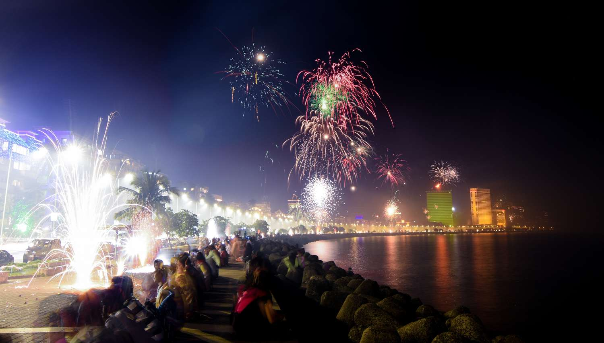
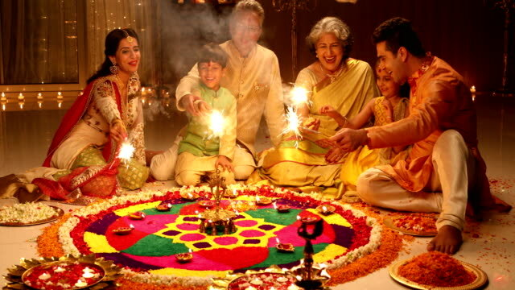
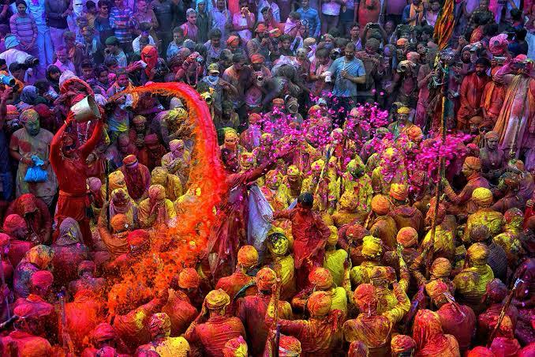
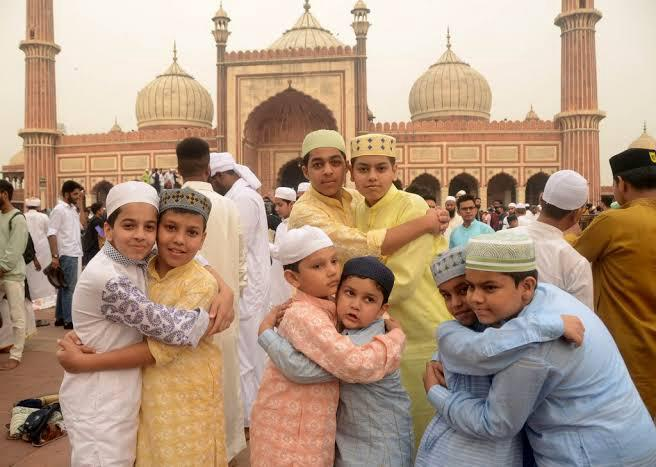
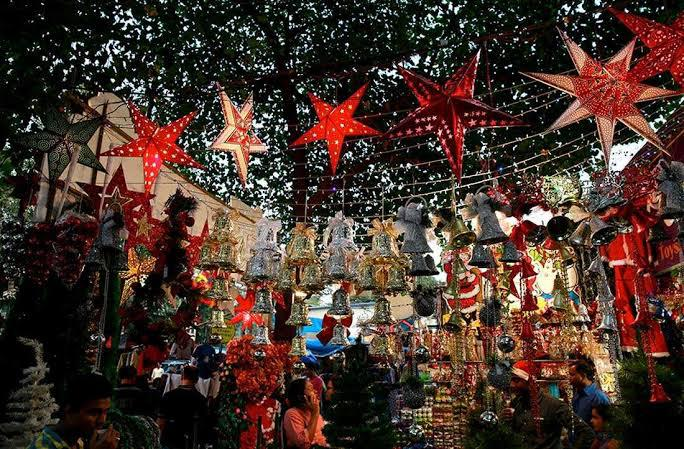

⮚ Deepavali comes from the Sanskrit word meaning 'row or series of lights'.
⮚ Holi also commemorates the divine love of Radha and Krishna, and is celebrated with music, traditional sweets like gujiya, and bonfires known as Holika Dahan on the eve of Holi.
More information about this festival :- Click Here

⮚ Diwali, also known as the festival of lights, is a five-day celebration. These five days are: Dhanteras, Naraka Chaturdashi (also known as Chhoti Diwali), the main Diwali day (Lakshmi Pujan), Govardhan Puja, and Bhai Dooj.
More information about this festival :- Click Here

⮚ On Eid, Muslims wear new clothes, attend special prayers at the mosque, share festive meals like biryani and sheer kurma, and give Zakat al-Fitr or Qurbani to help those in need.
More information about this festival :- Click Here

⮚ The festival is celebrated with decorated Christmas trees, exchanging gifts, singing carols, and family gatherings, often featuring festive meals and Santa Claus bringing joy to children.
More information about this festival :- Click Here